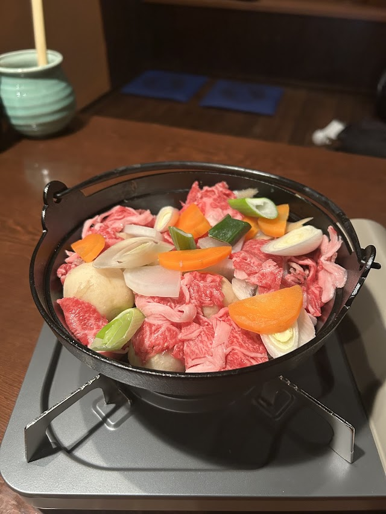
| 営業時間 | 月・火・水・木・金・土・日 16:45〜0:00 |
|---|---|
| 定休日 | なし(要最終確認) |
| 住所 | 山形県山形市香澄町１丁目８−８ 山形第１ビル 2F |
| 予約 | 可 — ☎ 023-624-0880 ／ 公式サイト |
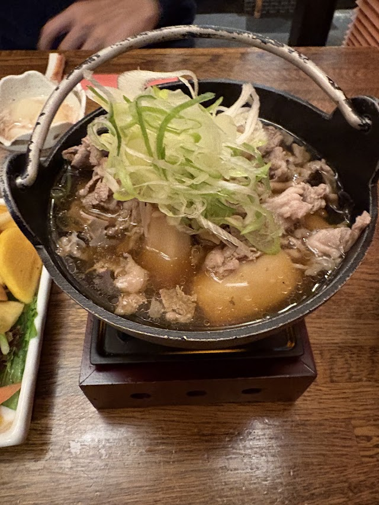
| 営業時間 | 月・火・水・木・金・土・日 17:00〜22:00 |
|---|---|
| 定休日 | なし(要最終確認) |
| 住所 | 霞城セントラル 1F, １丁目-１-1 城南町 山形市 山形県 990-0827 日本 |
| 予約 | 可 — ☎ 050-5493-0247 ／ 公式サイト |
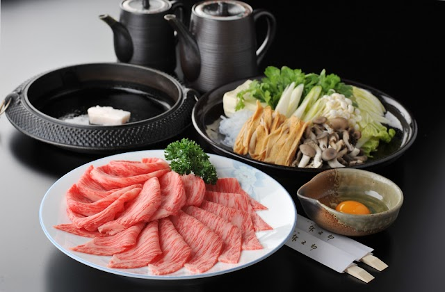
| 営業時間 | 月・火・水・木・金・土 11:30〜13:30, 17:00〜21:00 |
|---|---|
| 定休日 | 日曜 |
| 住所 | 山形県山形市香澄町１丁目６−１０ |
| 予約 | 可 — ☎ 023-631-3560 ／ 公式サイト |
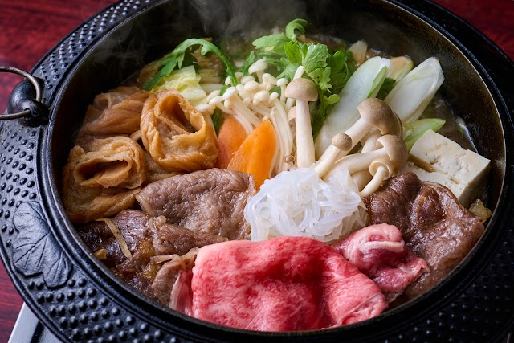
| 営業時間 | 月・水・木・金 11:30〜13:00, 17:00〜20:30 ／ 土 11:30〜13:30, 17:00〜20:30 ／ 日 11:30〜13:30, 17:00〜20:00 |
|---|---|
| 定休日 | 火曜 |
| 住所 | 山形県山形市七日町３丁目４−１６ |
| 予約 | 可 — ☎ 023-631-2106 ／ 公式サイト |
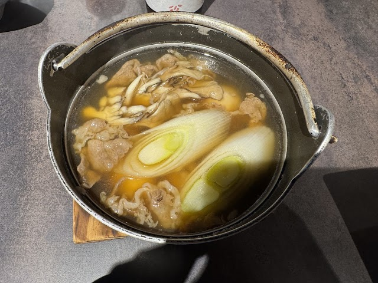
| 営業時間 | 月・火・水・木・金・土 17:00〜23:00 |
|---|---|
| 定休日 | 日曜 |
| 住所 | 山形県山形市香澄町３丁目８−３８ ターミナルプラザ |
| 予約 | 可 — ☎ 023-633-7272 ／ 公式サイト |
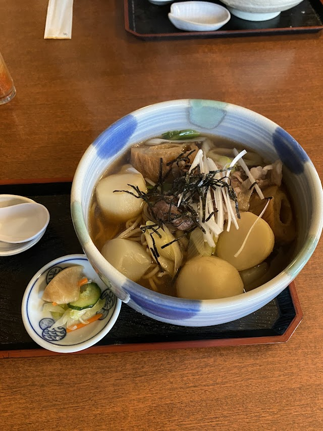
| 営業時間 | 月・火・木・金・土・日 9:00〜15:00 |
|---|---|
| 定休日 | 水曜 |
| 住所 | 山形県山形市山寺４４１１ |
| 予約 | 要確認 — ☎ 023-695-2116 ／ 公式サイト |
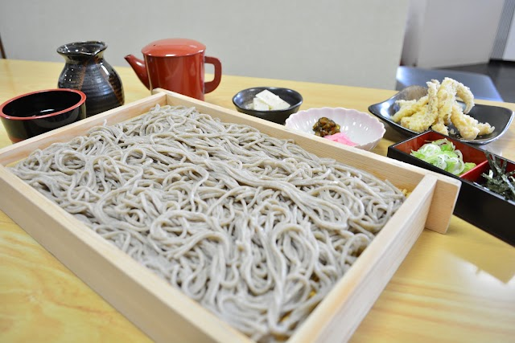
| 営業時間 | 月・火・水・木・金・土・日 8:30〜17:00 |
|---|---|
| 定休日 | なし(要最終確認) |
| 住所 | 山形県山形市山寺４４２９ |
| 予約 | 可 — ☎ 023-695-2214 ／ 公式サイト |
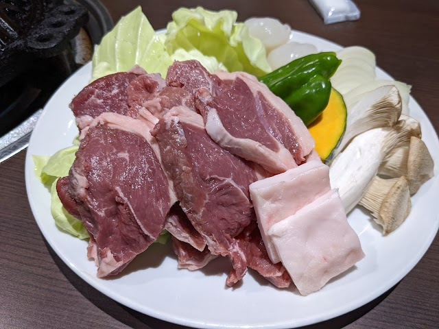
| 営業時間 | 月・火・水・金・土・日 11:00〜15:00, 17:00〜22:00 |
|---|---|
| 定休日 | 木曜 |
| 住所 | 川原-４２-5 蔵王温泉 山形市 山形県 990-2301 日本 |
| 予約 | 要確認 — ☎ 023-694-9565 ／ 公式サイト |
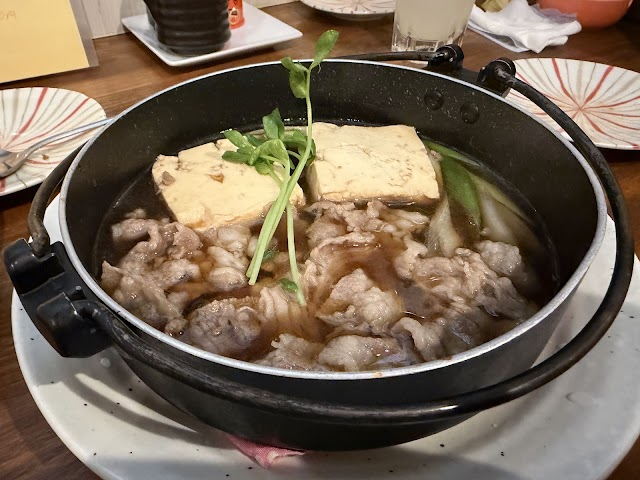
| 営業時間 | 月・火・水・木・金・土 17:00〜0:00 ／ 日 17:00〜23:00 |
|---|---|
| 定休日 | なし(要最終確認) |
| 住所 | 山形県山形市十日町１丁目３−２５ |
| 予約 | 可 — ☎ 050-5484-4864 ／ 公式サイト |
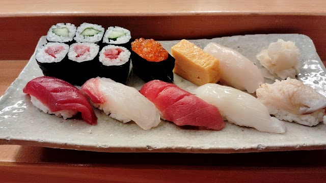
| 営業時間 | 火・水・木・金・土 16:30〜23:00 ／ 日 16:30〜21:00 |
|---|---|
| 定休日 | 月曜 |
| 住所 | 山形県山形市七日町４丁目１−３０ |
| 予約 | 可 — ☎ 023-622-4597 ／ 公式サイト |
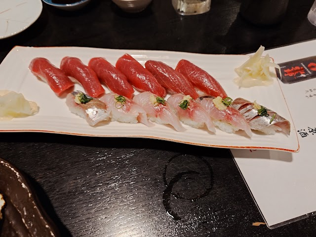
| 営業時間 | 月・火・水・木 17:00〜1:00 ／ 金・土 17:00〜2:00 |
|---|---|
| 定休日 | 日曜 |
| 住所 | 山形県山形市香澄町１丁目１０−１ |
| 予約 | 可 — ☎ 023-642-8555 ／ 公式サイト |
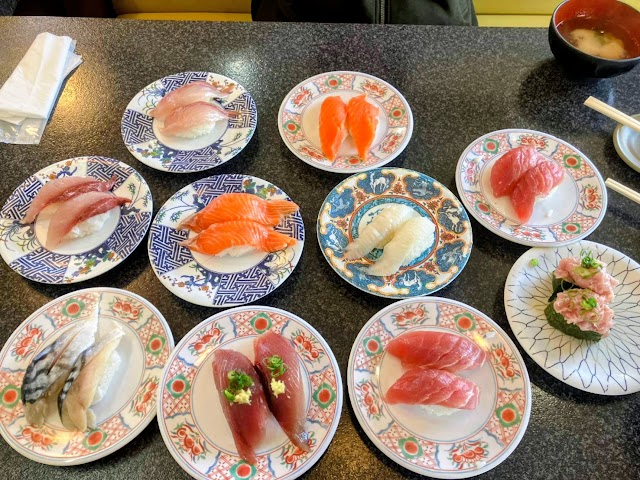
| 営業時間 | 月・火・金・土・日 11:00〜15:00, 17:00〜21:00 |
|---|---|
| 定休日 | 水・木曜 |
| 住所 | 山形県山形市南原町２丁目９−１２ 南原プラザ |
| 予約 | 要確認 — ☎ 023-641-2373 ／ 公式サイト |
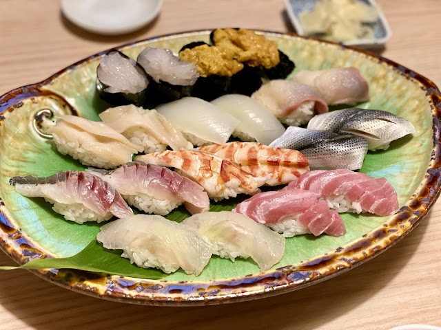
| 営業時間 | 火・水・木・金 17:30〜21:00 ／ 土 17:30〜21:30 |
|---|---|
| 定休日 | 月・日曜 |
| 住所 | 山形県山形市十日町３丁目９−２８ クイーンズ6・3・42 |
| 予約 | 可 — ☎ 023-631-9559 ／ 公式サイト |
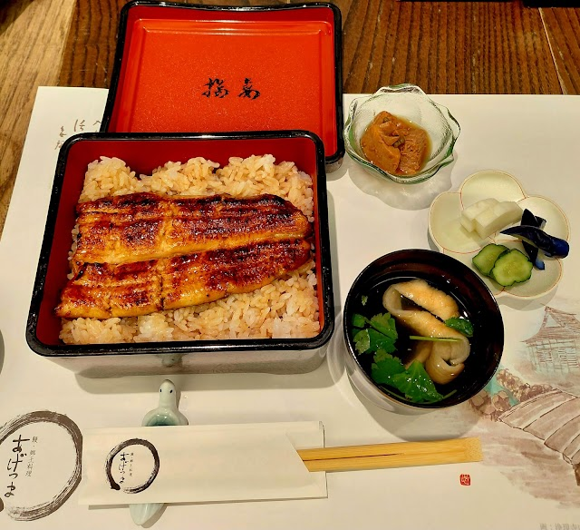
| 営業時間 | 水・木・金・土・日 11:30〜15:00, 17:00〜21:00 |
|---|---|
| 定休日 | 月・火曜 |
| 住所 | 山形県山形市緑町３丁目７−４８ |
| 予約 | 可 — ☎ 023-631-2738 ／ 公式サイト |
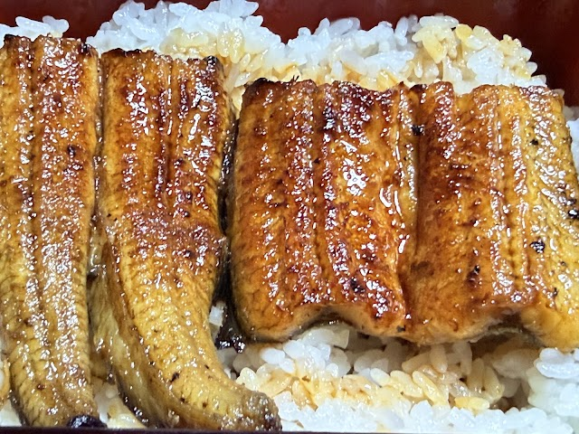
| 営業時間 | 月・火・水・金・土・日 11:00〜20:00 |
|---|---|
| 定休日 | 木曜 |
| 住所 | 山形県山形市宮町５丁目９−５２ |
| 予約 | 可 — ☎ 023-622-2465 ／ 公式サイト |
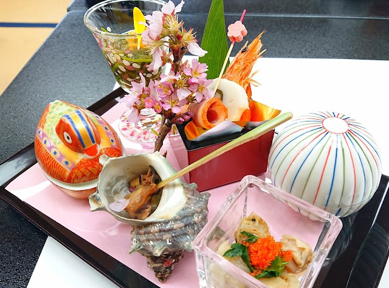
| 営業時間 | 月・火・木・金・土・日 11:30〜14:30, 17:00〜22:00 |
|---|---|
| 定休日 | 水曜 |
| 住所 | 山形県山形市薬師町２丁目８−８１ |
| 予約 | 可 — ☎ 023-631-3644 ／ 公式サイト |
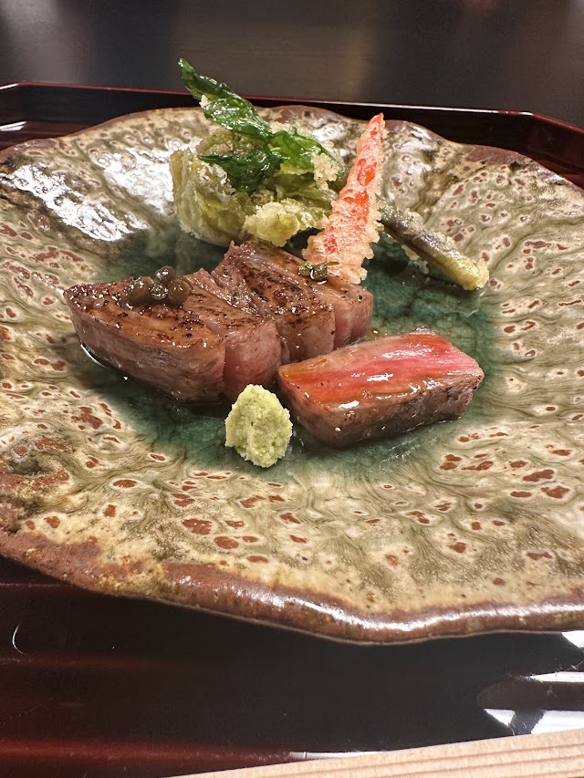
| 営業時間 | 月・火・水・木・金・土・日 12:00〜22:00 |
|---|---|
| 定休日 | なし(要最終確認) |
| 住所 | 山形県山形市七日町２丁目６−４ 割烹四山楼 |
| 予約 | 可 — ☎ 023-622-0043 ／ 公式サイト |
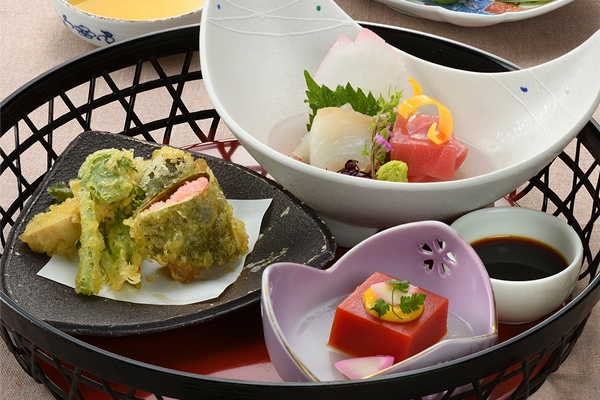
| 営業時間 | 月・火・木・金・土・日 6:30〜9:30, 11:30〜14:00, 17:00〜21:00 |
|---|---|
| 定休日 | 水曜 |
| 住所 | 山形県山形市香澄町１丁目１−番１号 ホテルメトロポリタン山形２階 |
| 予約 | 可 — ☎ 050-5489-3754 ／ 公式サイト |
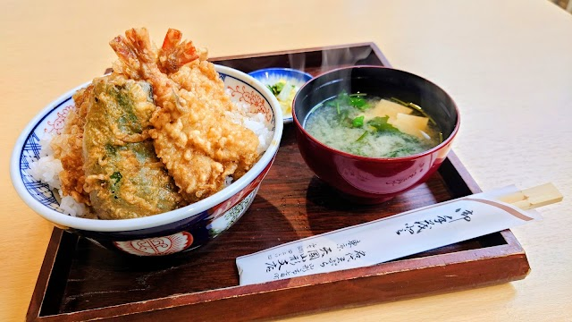
| 営業時間 | 火・水・木・金 11:30〜13:40, 17:30〜21:30 ／ 土・日 17:30〜21:30 |
|---|---|
| 定休日 | 月曜 |
| 住所 | 山形県山形市七日町４丁目８−４ |
| 予約 | 可 — ☎ 023-623-4264 |
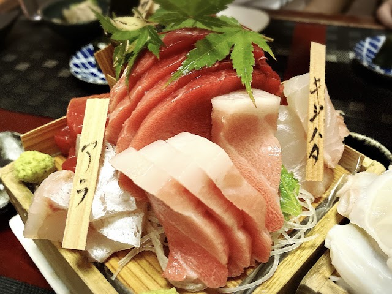
| 営業時間 | 月・火・水・木・金・土 17:00〜22:30 |
|---|---|
| 定休日 | 日曜 |
| 住所 | 山形県山形市香澄町２丁目１０−５ |
| 予約 | 可 — ☎ 023-642-2911 ／ 公式サイト |
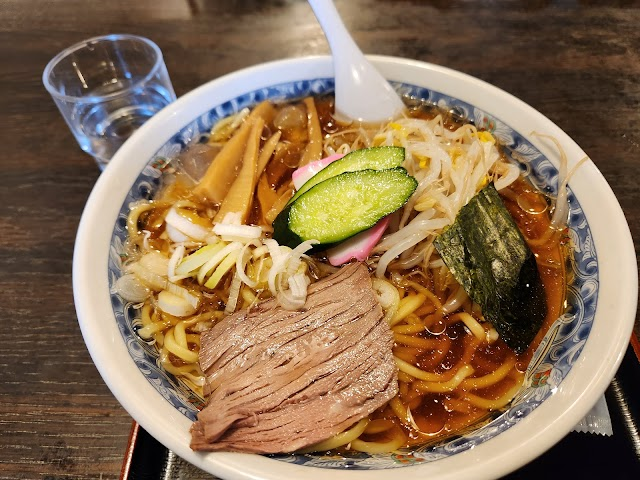
| 営業時間 | 月・火・木・金・土・日 11:30〜17:50 |
|---|---|
| 定休日 | 水曜 |
| 住所 | 山形県山形市本町２丁目３−２１ |
| 予約 | 要確認 — ☎ 023-623-0766 ／ 公式サイト |
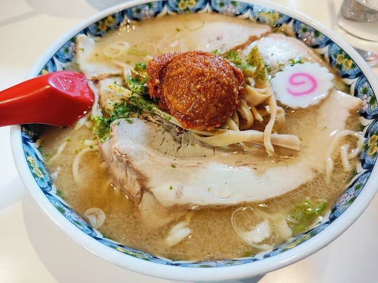
| 営業時間 | 月・火・木・金・土・日 10:30〜15:00 |
|---|---|
| 定休日 | 水曜 |
| 住所 | 山形県山形市桜田南１２−２７ |
| 予約 | 要確認 — ☎ 023-631-4903 ／ 公式サイト |
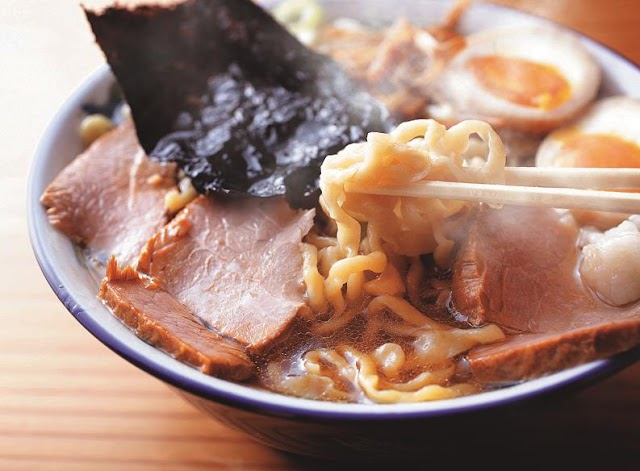
| 営業時間 | 火・水・木・金・土・日 11:00〜14:00 |
|---|---|
| 定休日 | 月曜 |
| 住所 | 山形県山形市西田２丁目１−１７ |
| 予約 | 要確認 — ☎ 023-647-0086 ／ 公式サイト |
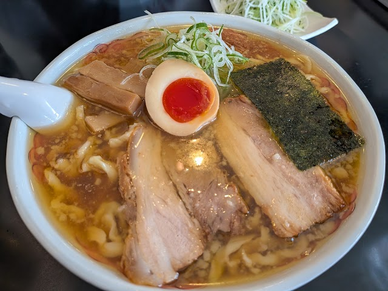
| 営業時間 | 月・水・木・金 11:00〜14:30, 17:00〜21:00 ／ 土・日 11:00〜21:00 |
|---|---|
| 定休日 | 火曜 |
| 住所 | 山形県山形市中桜田２丁目５−５ |
| 予約 | 要確認 — ☎ 023-666-8570 ／ 公式サイト |
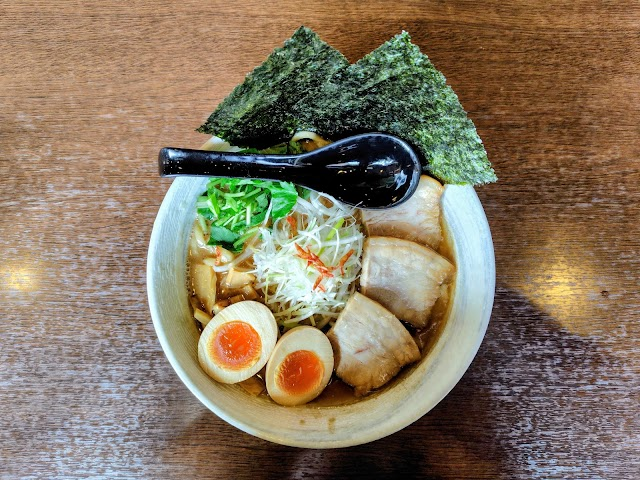
| 営業時間 | 火・水・木・日 11:00〜14:30 ／ 金・土 11:00〜14:30, 18:00〜20:30 |
|---|---|
| 定休日 | 月曜 |
| 住所 | 山形県山形市久保田２丁目１−６ |
| 予約 | 要確認 |
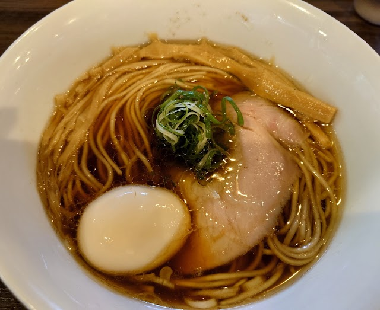
| 営業時間 | 月 11:00〜14:20 ／ 火・水・木・金・土・日 11:00〜14:20, 17:30〜20:00 |
|---|---|
| 定休日 | なし(要最終確認) |
| 住所 | 山形県山形市松波１丁目８−３３ |
| 予約 | 要確認 — ☎ 023-634-6010 |
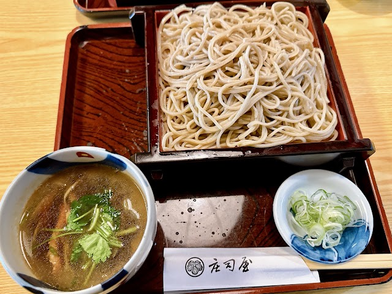
| 営業時間 | 火・水・木・金・土・日 11:00〜15:30, 17:00〜20:00 |
|---|---|
| 定休日 | 月曜 |
| 住所 | 山形県山形市幸町１４−２８ |
| 予約 | 可 — ☎ 023-622-1380 ／ 公式サイト |
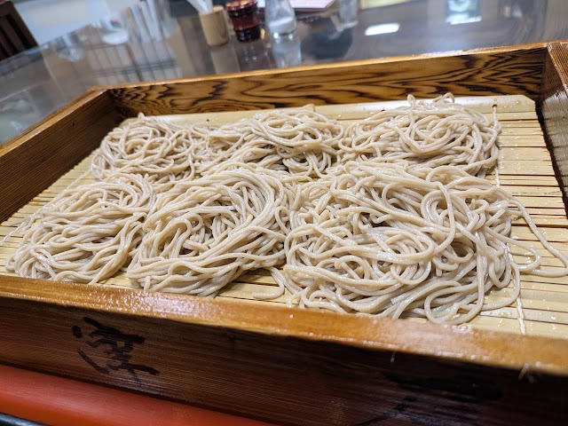
| 営業時間 | 月・木・金・土・日 11:00〜14:30, 17:00〜19:30 ／ 水 11:00〜14:30 |
|---|---|
| 定休日 | 火曜 |
| 住所 | 山形県山形市上町１丁目１−７５ |
| 予約 | 可 — ☎ 023-644-4973 ／ 公式サイト |
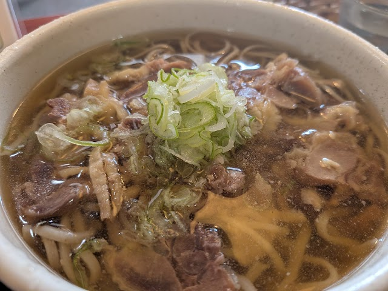
| 営業時間 | 月・木・土・日 10:30〜14:30, 17:00〜18:30 ／ 火 10:30〜14:30 ／ 金 10:30〜14:30, 17:00〜0:00 |
|---|---|
| 定休日 | 水曜 |
| 住所 | 山形県山形市薬師町２丁目１７−２ |
| 予約 | 要確認 — ☎ 023-631-2910 ／ 公式サイト |
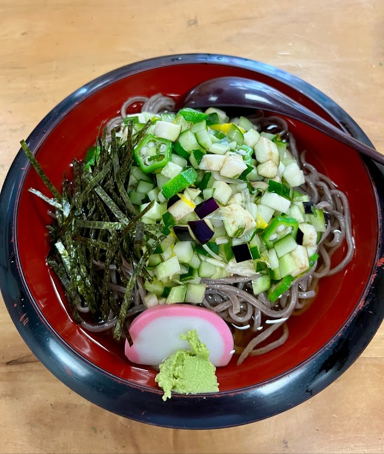
| 営業時間 | 月・火・水・木・金・土・日 11:00〜15:00 |
|---|---|
| 定休日 | なし(要最終確認) |
| 住所 | 山形県山形市山寺４４９４−５ |
| 予約 | 要確認 — ☎ 023-695-2506 ／ 公式サイト |
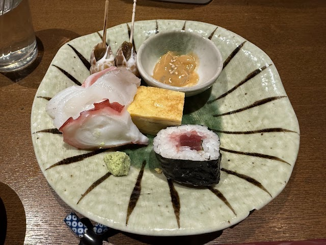
| 営業時間 | 月・火・水・木・金・土 17:30〜23:00 |
|---|---|
| 定休日 | 日曜 |
| 住所 | 山形県山形市七日町１丁目４−２９ 2F |
| 予約 | 可 — ☎ 023-674-6905 ／ 公式サイト |
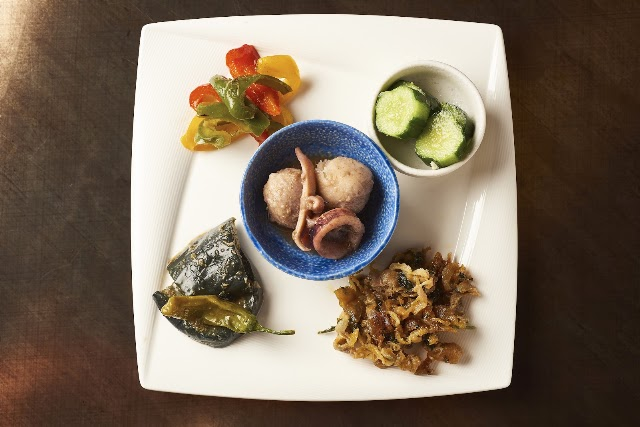
| 営業時間 | 月・火・水・木・金 16:00〜0:00 ／ 土 13:00〜0:00 ／ 日 13:00〜19:00 |
|---|---|
| 定休日 | なし(要最終確認) |
| 住所 | 山形県山形市香澄町１丁目４−１３ 船山ビル 2F |
| 予約 | 可 — ☎ 023-665-0323 ／ 公式サイト |
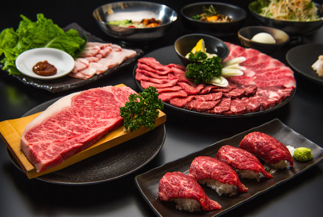
| 営業時間 | 月・火・水・木・金 11:30〜14:30, 17:30〜23:00 ／ 土・日 11:30〜14:30, 17:00〜23:00 |
|---|---|
| 定休日 | なし(要最終確認) |
| 住所 | 山形県山形市若葉町６−３３ |
| 予約 | 可 — ☎ 023-600-3104 ／ 公式サイト |
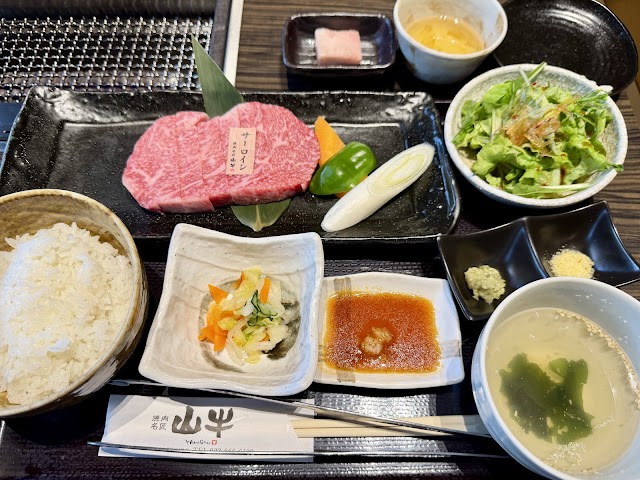
| 営業時間 | 月・水・木 11:30〜14:00, 17:30〜21:00 ／ 金・土・日 11:30〜14:00, 17:00〜21:00 |
|---|---|
| 定休日 | 火曜 |
| 住所 | 山形県山形市旅篭町１丁目８−１５ |
| 予約 | 可 — ☎ 023-666-6129 ／ 公式サイト |
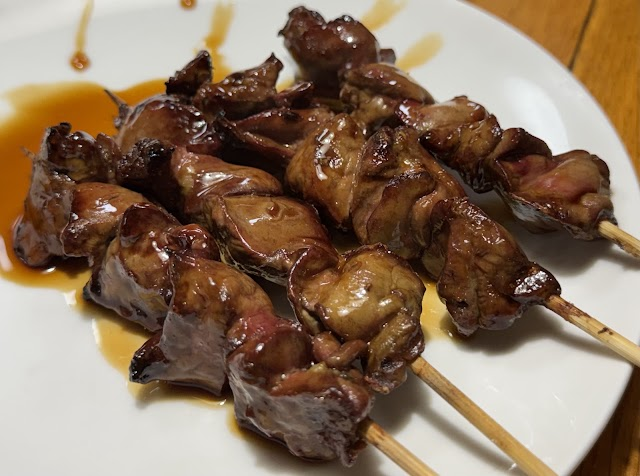
| 営業時間 | 月・火・水・木・金・土 17:00〜21:00 |
|---|---|
| 定休日 | 日曜 |
| 住所 | 山形県山形市十日町２丁目３−４４ |
| 予約 | 可 — ☎ 023-641-1125 |
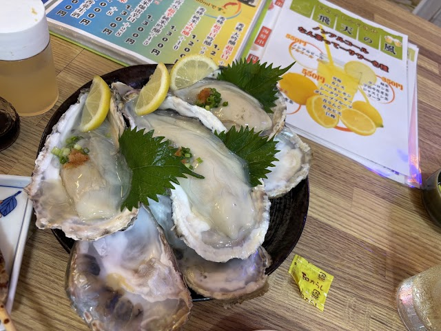
| 営業時間 | 月・火・木・金・土・日 17:30〜0:00 |
|---|---|
| 定休日 | 水曜 |
| 住所 | 山形県山形市七日町２丁目１−１４ 16 |
| 予約 | 要確認 — ☎ 090-2362-7858 ／ 公式サイト |
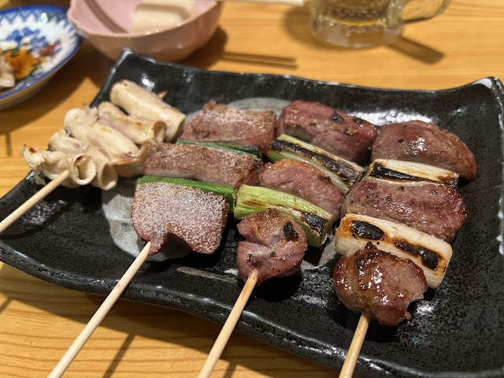
| 営業時間 | 月・火・水・木・金・土 17:00〜23:00 |
|---|---|
| 定休日 | 日曜 |
| 住所 | 山形県山形市香澄町１丁目９−６ Ｃ＆Ｄビル |
| 予約 | 可 — ☎ 023-633-6711 |
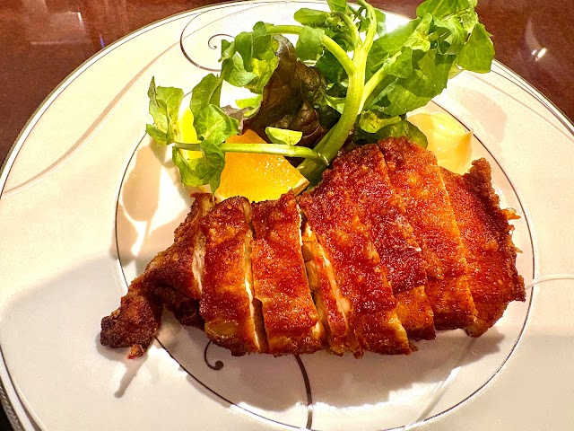
| 営業時間 | 火・水・木・金・土 17:30〜22:30 |
|---|---|
| 定休日 | 月・日曜 |
| 住所 | 山形県山形市香澄町３丁目８−６ |
| 予約 | 可 — ☎ 023-600-1666 ／ 公式サイト |
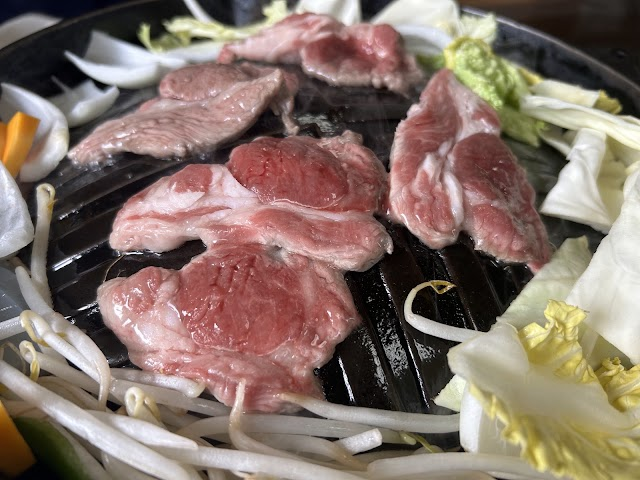
| 営業時間 | 月・火・水・金・土 11:00〜14:00, 17:00〜20:00 ／ 日 11:00〜14:00 |
|---|---|
| 定休日 | 木曜 |
| 住所 | 山形県山形市蔵王半郷２６６−１０ ジンギスカンシロー |
| 予約 | 可 — ☎ 023-688-9575 ／ 公式サイト |
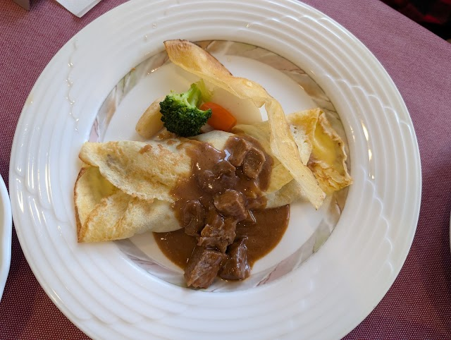
| 営業時間 | 月・火・木・金・土・日 11:30〜14:30, 17:30〜21:00 |
|---|---|
| 定休日 | 水曜 |
| 住所 | 山形県山形市伊達城１丁目６−６ |
| 予約 | 可 — ☎ 050-5263-7862 ／ 公式サイト |
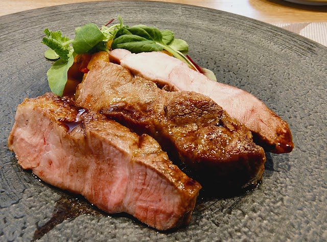
| 営業時間 | 火・水 18:00〜22:00 ／ 木・金・土・日 11:30〜14:00, 18:00〜22:00 |
|---|---|
| 定休日 | 月曜 |
| 住所 | 山形県山形市七日町２丁目３−９ ライトロードIn七日町 2F |
| 予約 | 可 — ☎ 023-676-8100 ／ 公式サイト |
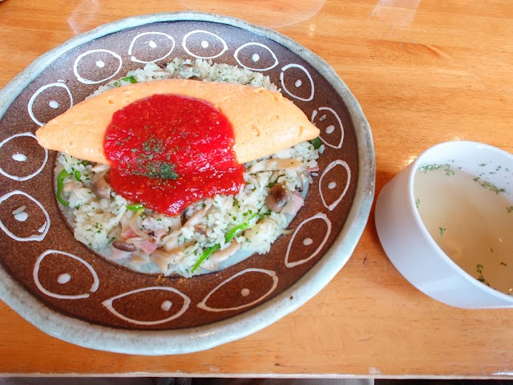
| 営業時間 | 月・水・金・土 10:30〜21:00 ／ 火・木 10:30〜15:00 ／ 日 10:30〜18:00 |
|---|---|
| 定休日 | なし(要最終確認) |
| 住所 | 山形県山形市芳野２７ |
| 予約 | 可 — ☎ 023-631-4169 ／ 公式サイト |
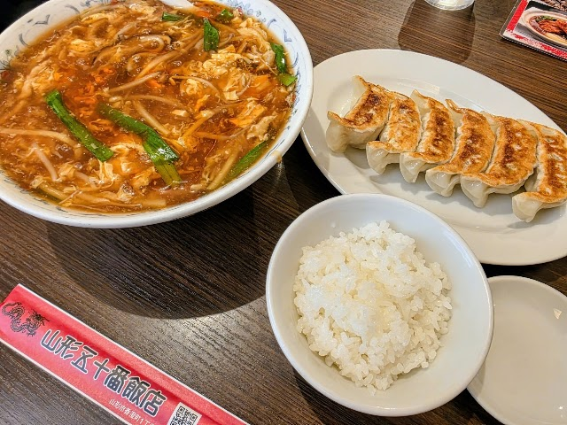
| 営業時間 | 月・火・水・金・土 11:30〜15:00, 15:30〜2:00 ／ 木 11:30〜15:00, 17:00〜2:00 |
|---|---|
| 定休日 | 日曜 |
| 住所 | 山形県山形市香澄町１丁目８−８ 1F |
| 予約 | 要確認 — ☎ 023-623-0050 ／ 公式サイト |
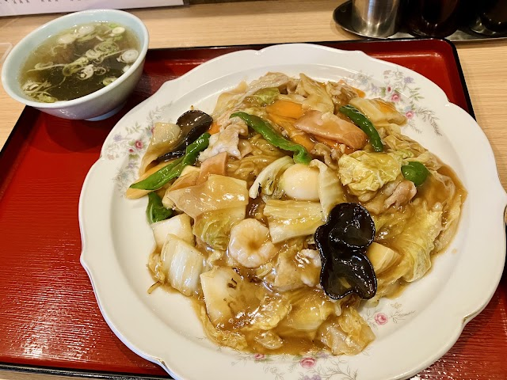
| 営業時間 | 月・火・水・木・土 11:00〜15:00, 18:00〜20:00 ／ 金 11:00〜15:00 |
|---|---|
| 定休日 | 日曜 |
| 住所 | 山形県山形市東原町１丁目３−２４ |
| 予約 | 要確認 |
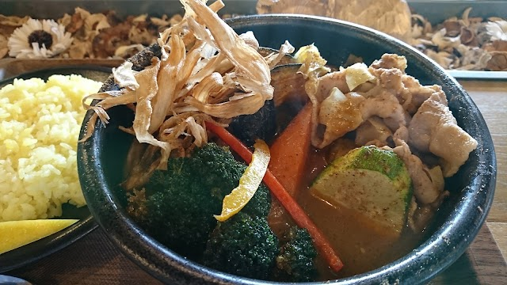
| 営業時間 | 火・水・木・金・土・日 11:00〜14:00, 17:00〜20:15 |
|---|---|
| 定休日 | 月曜 |
| 住所 | 山形県山形市北町３丁目１−１ |
| 予約 | 要確認 — ☎ 023-673-9339 ／ 公式サイト |
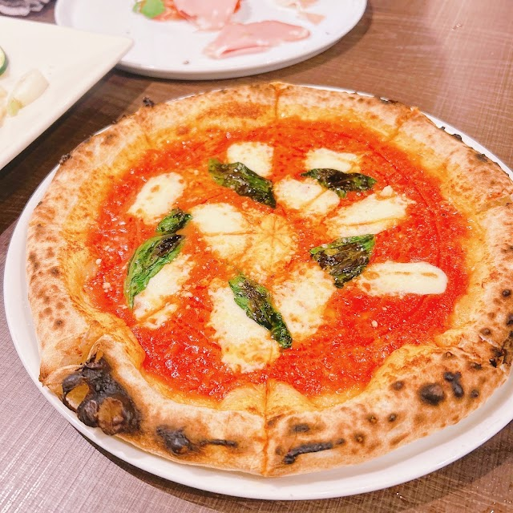
| 営業時間 | 月・火・木・金・土・日 17:00〜0:00 |
|---|---|
| 定休日 | 水曜 |
| 住所 | 山形県山形市香澄町１丁目１３−１３ 16YTパーレルビル １F |
| 予約 | 可 — ☎ 050-8892-7112 ／ 公式サイト |
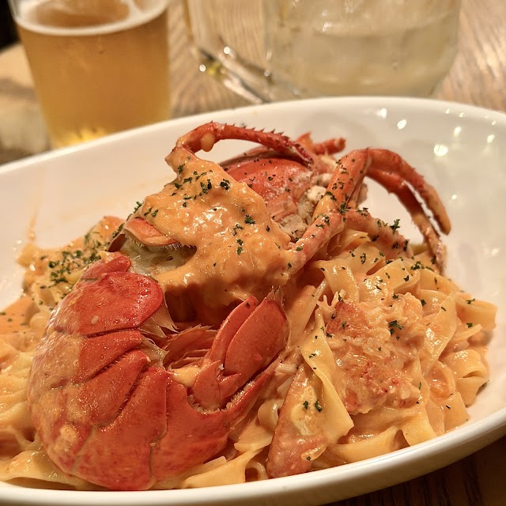
| 営業時間 | 月・水・木・金・土・日 16:00〜23:30 ／ 火 16:00〜23:00 |
|---|---|
| 定休日 | なし(要最終確認) |
| 住所 | 山形県山形市香澄町２丁目１−２ 美装ビル 南側 |
| 予約 | 可 — ☎ 023-673-9583 ／ 公式サイト |
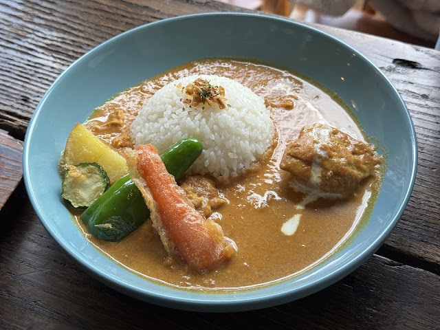
| 営業時間 | 月・火・水・木 11:30〜16:00, 17:30〜20:00 ／ 金・土・日 9:00〜17:00 |
|---|---|
| 定休日 | なし(要最終確認) |
| 住所 | 山形県山形市蔵王温泉９３５−２４ |
| 予約 | 要確認 — ☎ 023-694-9081 ／ 公式サイト |
| 営業時間 | 月・火・木・金・土 9:30〜21:00 ／ 日 9:30〜19:00 |
|---|---|
| 定休日 | 水曜 |
| 住所 | 山形県山形市鉄砲町３丁目１−６３ |
| 予約 | 要確認 — ☎ 023-631-2483 ／ 公式サイト |
| 営業時間 | 月・水・木・金・土・日 8:00〜18:00 |
|---|---|
| 定休日 | 火曜 |
| 住所 | 山形県山形市本町２丁目４−３１ |
| 予約 | 要確認 — ☎ 023-642-7500 |
| 営業時間 | 月・火・水・木・金・土・日 9:00〜18:00 |
|---|---|
| 定休日 | なし(要最終確認) |
| 住所 | 山形県山形市十日町３丁目１０−３６ |
| 予約 | 要確認 — ☎ 023-622-3108 ／ 公式サイト |
| 営業時間 | 月・水・木・金 11:00〜17:30 ／ 土・日 11:00〜18:00 |
|---|---|
| 定休日 | 火曜 |
| 住所 | 山形県山形市城南町１丁目１−１ |
| 予約 | 要確認 — ☎ 023-646-5551 ／ 公式サイト |
| 営業時間 | 月・火・水・金・土・日 9:30〜18:00 |
|---|---|
| 定休日 | 木曜 |
| 住所 | 山形県山形市東原町１丁目１１−１４ |
| 予約 | 要確認 — ☎ 023-632-3866 |
| 営業時間 | 水・木・金・土・日 10:00〜19:00 |
|---|---|
| 定休日 | 月・火曜 |
| 住所 | 山形県山形市桜田東２丁目１０−２６ ミューゼ９５ |
| 予約 | 要確認 — ☎ 023-676-8878 ／ 公式サイト |
| 営業時間 | 月・火・水・木・金・土・日 9:00〜17:00 |
|---|---|
| 定休日 | なし(要最終確認) |
| 住所 | 山形県山形市蔵王松ケ丘２丁目１−３ |
| 予約 | 要確認 — ☎ 023-689-1136 ／ 公式サイト |
| 営業時間 | 月・火・金・土・日 8:30〜16:30 |
|---|---|
| 定休日 | 水・木曜 |
| 住所 | 山形県山形市飯田３丁目１−１０ |
| 予約 | 要確認 — ☎ 023-676-4520 ／ 公式サイト |
| 営業時間 | 火・水・木・金・土 11:00〜17:00 |
|---|---|
| 定休日 | 月・日曜 |
| 住所 | 山形県山形市嶋南１丁目２−２０ |
| 予約 | 要確認 — ☎ 023-674-7637 ／ 公式サイト |
本ガイドは個人利用目的で作成。掲載情報は2026年8月時点の調査に基づく。写真出典: Google Maps投稿写真(©各投稿者/Google)。